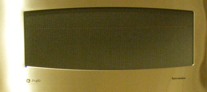
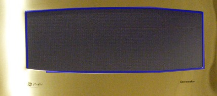
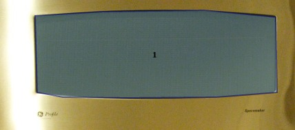
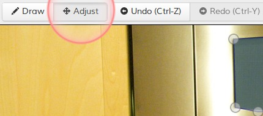
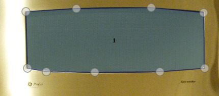

Trace the shape for the indicated object in the image. Click Next after you draw a shape. Skip an image by clicking No {{cat.name}} in this image if there is no indicated object. The HIT will be submitted after you finished {{max_count}} objects.
Please draw the shape around regions that have a single {{cat.name}}. Make the region as tight as possible. Your shape should closely follow the object boundary. Draw multiple regions when the visible parts of object are disjointed. Below are examples of a person and a bike that break into two parts.
We will reject HITs that do not follow the instructions.
1 Click on the object boundary.
2 Continue clicking along the boundary.
2 Continue clicking along the boundary.
3 Right-click to close the polygon.
To close the shape, you do not need to click near the first point. You can right-click to connect the first and last point.
After drawing a polygon, please adjust its edges so that it better fits the true boundary. When you are done adjusting, switch back to "Draw" mode to draw more polygons.
You can use the keyboard shortcut D and A to switch modes quickly.
1 Switch to "Adjust" mode.
2 Click on the polygon.
3 Drag the small white circles.
Scroll with the mouse wheel to zoom in. Use move to target (M) to center the target object. Zoom In (I) and Zoom out (O) help you to zoom to the object.
Press 'space' and drag with the mouse to move around in the image (panning). You can also press the arrow keys to move.
Polygons must contain at least four points and cannot intersect themselves. Try adding more points so that the first and last point can connect.
This polygon cannot close.
This edge cannot be added.
This polygon can be closed.